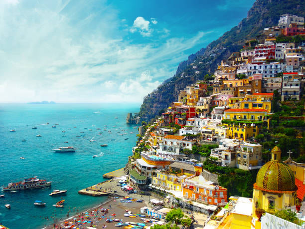

Coastal Road Trip: Italy's Amalfi Coast
Driving the SS163
The cliffside road from Sorrento to Salerno is as terrifying as it is beautiful. Pro tip: rent the smallest car possible and buy full insurance. Better yet, take the SITA buses.
Village Highlights
Positano's vertical charm is iconic, but quieter Praiano stole my heart. Atrani, the coast's smallest village, has the best authentic trattorias away from crowds.
Secret Beaches
A local fisherman tipped me off about Spiaggia del Duoglio - reachable only by 300 steps from Conca dei Marini. The crystal-clear water was worth every step.
Amalfi Tips
- Visit April-May or September-October
- Book ferries between towns for stunning views
- Try delizia al limone (lemon dessert)
- Hike Path of the Gods at sunrise